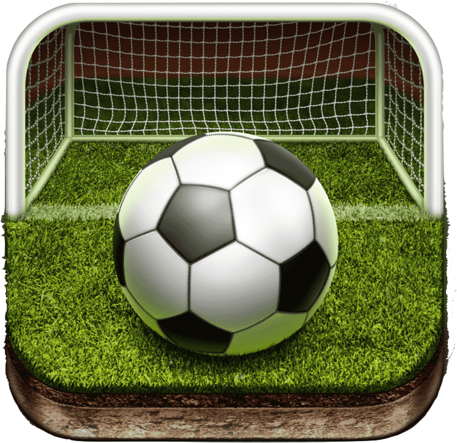

Experiencia
-
Aplicación móvil diseñada para gestionar torneos deportivos
Posgre SQL, React Js, Flutter
18 - 10 - 2020
Sportify.com
 -
Aplicación de gestion bibliotecaria
MySQL, Ionic
17 - 10 - 2010
BibliotecaOnline

-
Plataforma Web para la Administración de Proyectos Universitarios
MySQL, Angular
17 - 10 - 2010
ProyectoUWeb